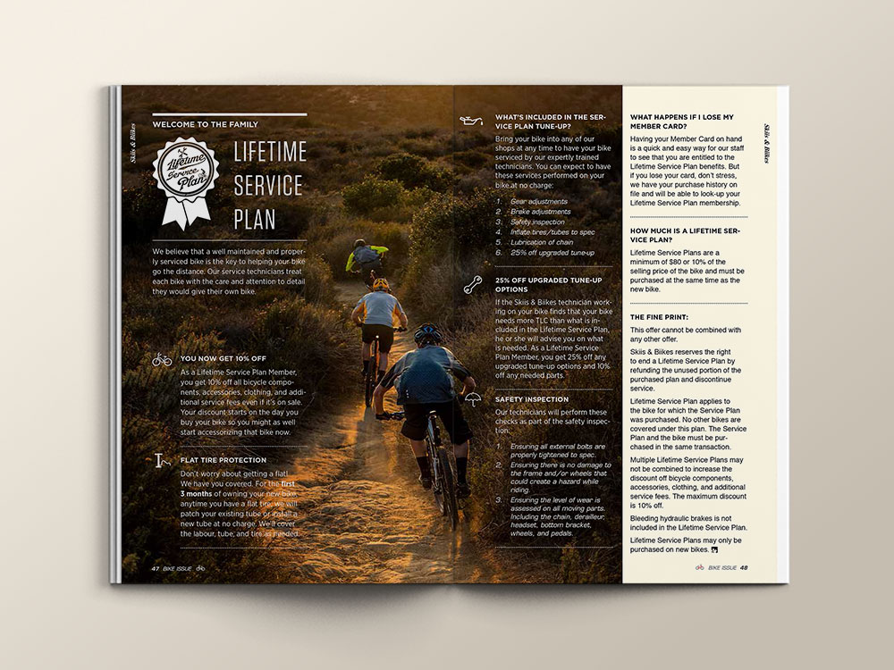

-
Print marketing materials
-
Description
Magazines, posters and brochures are conventional ways to reach out to customers in the stores. They take care of a group of customers who have not been reached by the company’s digital marketing efforts.
-
Time period
2016
-
Credit
Visual design: Su
Strategy and marketing: team effort
Images from suppliers used throughout.
-
Keywords
Campaign Print Photography Magazine Poster
